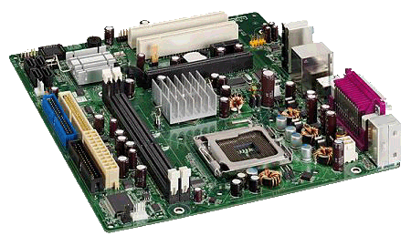

Дънна платка
Дънната платка или просто дъното, физически представлява
пластмасов правоъгълник, върху който са монтирани централния процесор,
оперативната памет, куплунги за включване на входно-изходни устройства и още
много други компоненти на компютъра.
Важна част от дъното е комуникационната шина. Нейна
характеристика е скоростта на обмен на данните. Тя е от порядъка на
няколкостотин MHz.
До голяма степен скоростта на работа на компютърната система зависи от работната
честота на шината, както и на централния процесор и оперативната памет.

Едни от
най-известните производители са:
ASUS -------------------------------->
http://www.asus.com.tw/
Biostar ----------------------------->
http://www.biostar.com.tw/
Chaintech ------------------------>
http://www.chaintech.com.tw/
DFI (Diamond Flower Inc.) ---->
http://www.dfi.com/
Elitegroup (ECS) --------------->
http://www.ecs.com.tw/
Giga-Byte Technology Co ->
http://www.gigabyte.com.tw/
J&W --------------------------------->
http://www.jwele.com/
MSI (Micro Star International) ->
http://www.msi.com/